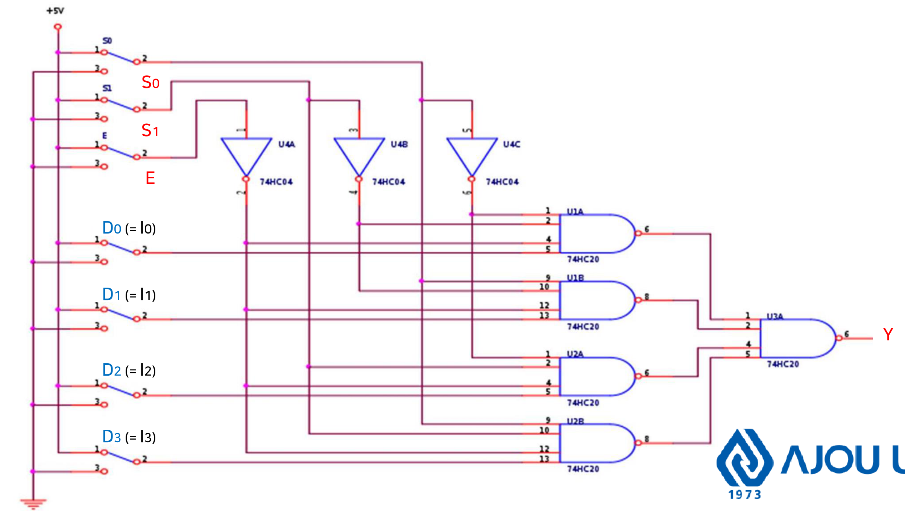
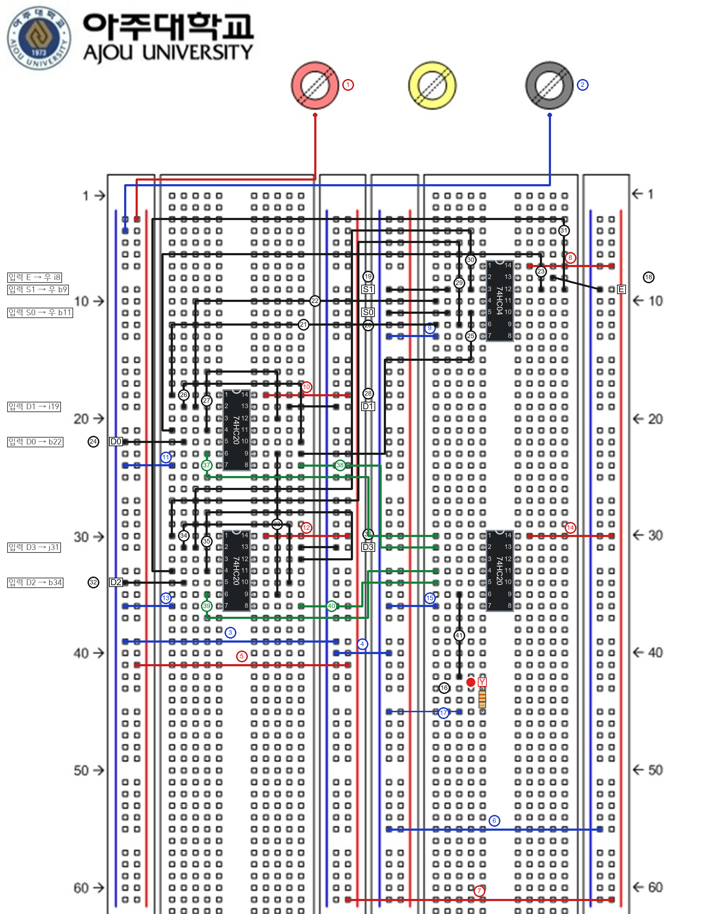
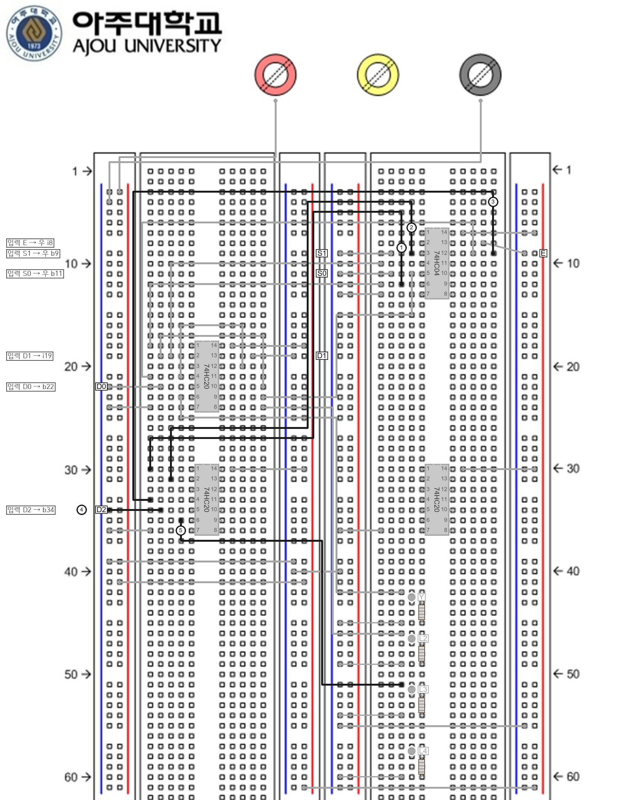
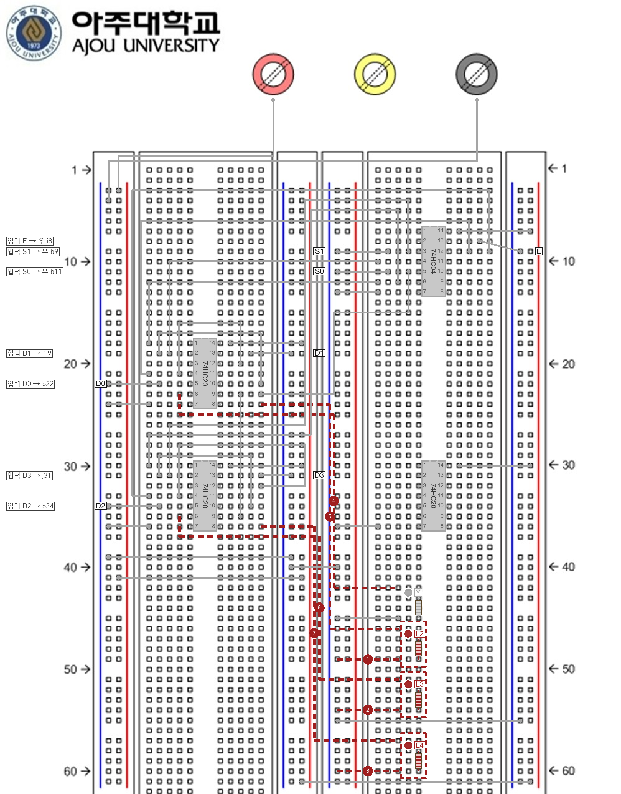
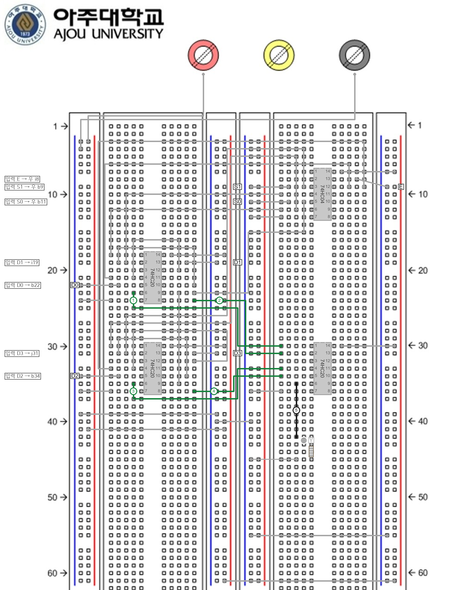
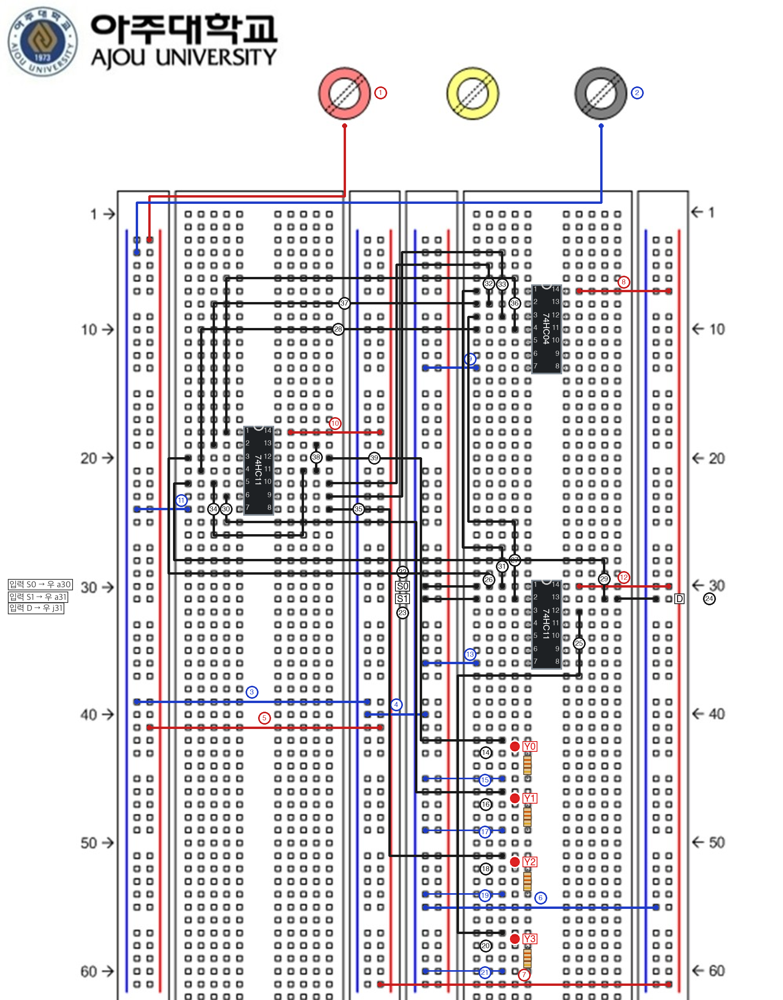
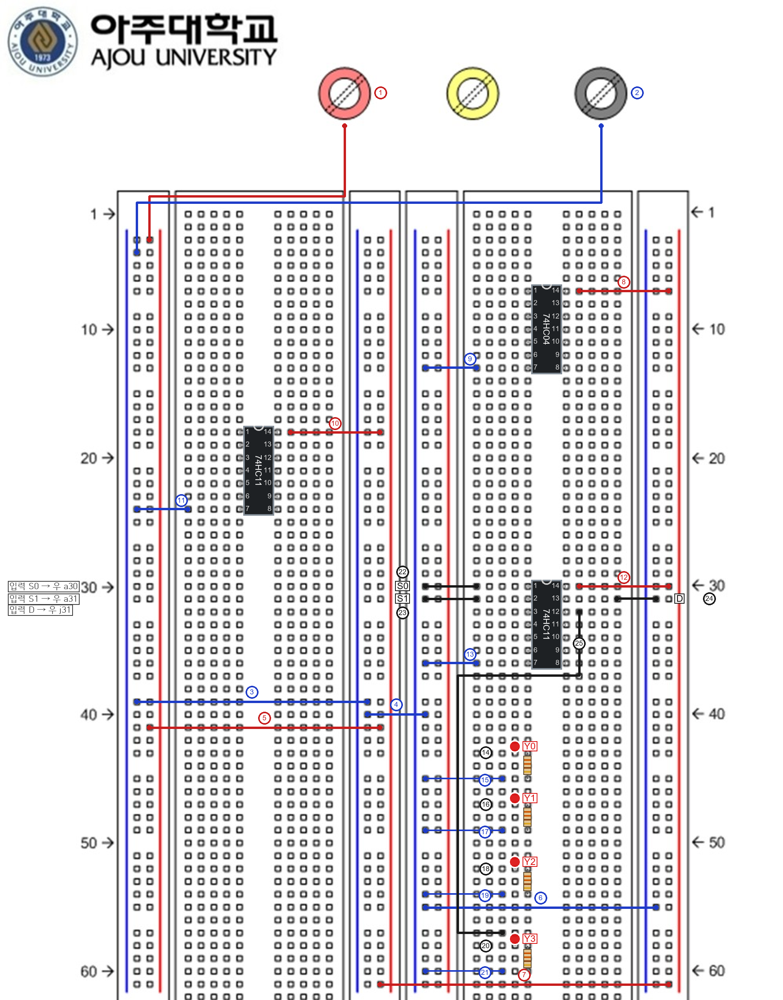
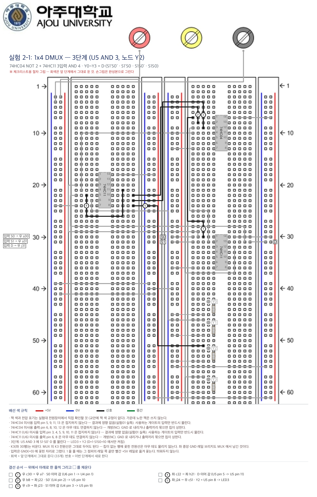

회로 1/2 · C1 · 실험 1-1) Enable을 갖는 4x1 MUX - 회로 구현 (74HC04 + 74HC20 ×3) · 기록: T1 · 판독: LED

강의노트 p8 · 회로 구성
교안 p8 회로도 그대로. 이 주차 첫 회로라 맨바닥에서 시작한다. 1단계에 네 칩(U4·U1·U2· U3)의 전원과 LED 네 사슬을 한꺼번에 꽂는다(기반). 관측 단계는 여덟이다 — 인버터 출력 셋(1~3), 앞단 NAND 출력 넷(4~7), Y(8) 순으로 신호가 흐르는 차례다. Y 가 설 때까지 LED 넷이 전부 비어 있으므로 중간 노드는 LED 로 본다: 인버터 출력은 LED4·LED3·LED2, NAND 출력은 LED1~LED4. 임시 급전선을 뽑는 자리마다 걷기 행과 걷기 그림이 한 장씩 있어 단계 표는 열 줄이다. 8걷기는 LED2~4 사슬도 뽑아 8단계 보드가 완성본과 같은 모양(LED1 하나)이 된다. 4~8단계는 새 신호선이 다섯이다 — 이 주차 예산이 5 다. E 인버터는 교안의 게이트 1 대신 게이트 6(pin 13→12)이다. 네 NAND 의 입력 배정은 래스터 회로도의 vision 판독이다.
완성본 — 손그림 원도 (회색 없음)

결선도: 실험04_1-1_결선도_4x1MUX.png
- 1전원잭 → 좌 VCC레일3행전원장치 +5V 잭
- 2전원잭 → 좌 GND레일4행전원장치 0V 잭
- 3좌 GND레일39행 → 좌 중앙GND레일39행레일 브리지
- 4좌 중앙GND레일40행 → 우 중앙GND레일40행레일 브리지
- 5좌 VCC레일41행 → 좌 중앙VCC레일41행레일 브리지
- 6우 중앙GND레일55행 → 우 GND레일55행레일 브리지
- 7좌 중앙VCC레일61행 → 우 VCC레일61행레일 브리지
- 8우 g7 → 우 VCC레일7행pin 14 -> +5V 레일
- 9우 a13 → 우 중앙GND레일13행pin 7 -> GND 레일
- 10좌 g18 → 좌 중앙VCC레일18행pin 14 -> +5V 레일
- 11좌 a24 → 좌 GND레일24행pin 7 -> GND 레일
- 12좌 g30 → 좌 중앙VCC레일30행pin 14 -> +5V 레일
- 13좌 a36 → 좌 GND레일36행pin 7 -> GND 레일
- 14우 g30 → 우 VCC레일30행pin 14 -> +5V 레일
- 15우 a36 → 우 중앙GND레일36행pin 7 -> GND 레일
- 16우 d42 → 우 e45Y: LED(우 d42→우 d43) + 330Ω(우 e43→우 e45) 직렬 · Y — 진리표 T1 의 Y 열
- 17우 c45 → 우 중앙GND레일45행Y 저항 아래 -> GND
- 18우 GND레일9행 → 우 i8입력 E -> U4 pin 13 · 1 이면 레일 쪽 끝을 +5V 레일로 옮겨요
- 19우 중앙GND레일9행 → 우 b9입력 S1 -> U4 pin 3 · 1 이면 레일 쪽 끝을 +5V 레일로 옮겨요
- 20우 중앙GND레일11행 → 우 b11입력 S0 -> U4 pin 5 · 1 이면 레일 쪽 끝을 +5V 레일로 옮겨요
- 21우 a12 → 좌 a18S0' (U4 pin 6) -> U1 pin 1
- 22우 a10 → 좌 c19S1' (U4 pin 4) -> U1 pin 2
- 23우 h9 → 좌 a21E' (U4 pin 12) -> U1 pin 4
- 24좌 GND레일22행 → 좌 b22입력 D0 -> U1 pin 5 · 1 이면 레일 쪽 끝을 +5V 레일로 옮겨요
- 25우 d11 → 좌 j23S0 갈래 (U4 pin 5) -> U1 pin 9
- 26좌 b19 → 좌 j22S1' 이어 감 (U1 pin 2 -> U1 pin 10)
- 27좌 d21 → 좌 h20E' 이어 감 (U1 pin 4 -> U1 pin 12)
- 28좌 중앙GND레일19행 → 좌 i19입력 D1 -> U1 pin 13 · 1 이면 레일 쪽 끝을 +5V 레일로 옮겨요
- 29우 c12 → 좌 a30S0' (U4 pin 6) -> U2 pin 1
- 30우 d9 → 좌 c31S1 갈래 (U4 pin 3) -> U2 pin 2
- 31우 j9 → 좌 a33E' (U4 pin 12) -> U2 pin 4
- 32좌 GND레일34행 → 좌 b34입력 D2 -> U2 pin 5 · 1 이면 레일 쪽 끝을 +5V 레일로 옮겨요
- 33좌 h23 → 좌 h35S0 이어 감 (U1 pin 9 -> U2 pin 9)
- 34좌 b31 → 좌 i34S1 이어 감 (U2 pin 2 -> U2 pin 10)
- 35좌 d33 → 좌 j32E' 이어 감 (U2 pin 4 -> U2 pin 12)
- 36좌 중앙GND레일31행 → 좌 j31입력 D3 -> U2 pin 13 · 1 이면 레일 쪽 끝을 +5V 레일로 옮겨요
- 37좌 d23 → 우 a30(E'·S1'·S0'·D0)' (U1 pin 6) -> U3 pin 1
- 38좌 j24 → 우 a31(E'·S1'·S0·D1)' (U1 pin 8) -> U3 pin 2
- 39좌 d35 → 우 a33(E'·S1·S0'·D2)' (U2 pin 6) -> U3 pin 4
- 40좌 j36 → 우 a34(E'·S1·S0·D3)' (U2 pin 8) -> U3 pin 5
- 41우 c35 → 우 c42Y = U3 pin 6 -> LED1
손그림은 이 그림을 따라 그리고, 학번·이름·날짜는 손으로 적어요
U4 = 74HC04 (hex inverter, DIP-14) — K1
- pin 14 → VCC(+5V)
- pin 7 → GND
- pin 3 ← 입력 S1 (U4B)
- pin 3 → U2.pin2 (S1 갈래 → U2A)
- pin 4 → U1.pin2 (S1' → U1A)
- pin 5 ← 입력 S0 (U4C)
- pin 5 → U1.pin9 (S0 갈래 → U1B)
- pin 6 → U1.pin1 (S0' → U1A)
- pin 6 → U2.pin1 (S0' → U2A)
- pin 13 ← 입력 E (U4F — 교안은 U4A pin 1)
- pin 12 → U1.pin4 (E' → U1A)
- pin 12 → U2.pin4 (E' → U2A)
U1 = 74HC20 (dual 4-input NAND, DIP-14) — K2
- pin 14 → VCC(+5V)
- pin 7 → GND
- pin 1 ← U4.pin6 (U1A, S0')
- pin 2 ← U4.pin4 (U1A, S1')
- pin 2 → U1.pin10 (S1' 이어 감)
- pin 4 ← U4.pin12 (U1A, E')
- pin 4 → U1.pin12 (E' 이어 감)
- pin 5 ← 입력 D0 (U1A)
- pin 6 → U3.pin1 (U1A 출력) ※ (E'·S1'·S0'·D0)'
- pin 9 ← U4.pin5 (U1B, S0)
- pin 9 → U2.pin9 (S0 이어 감)
- pin 10 ← U1.pin2 (U1B, S1')
- pin 12 ← U1.pin4 (U1B, E')
- pin 13 ← 입력 D1 (U1B)
- pin 8 → U3.pin2 (U1B 출력) ※ (E'·S1'·S0·D1)'
- 미연결: pin 3, 11 → 아무것도 꽂지 않는다 (n.c.)
U2 = 74HC20 (dual 4-input NAND, DIP-14) — K3
- pin 14 → VCC(+5V)
- pin 7 → GND
- pin 1 ← U4.pin6 (U2A, S0')
- pin 2 ← U4.pin3 (U2A, S1)
- pin 2 → U2.pin10 (S1 이어 감)
- pin 4 ← U4.pin12 (U2A, E')
- pin 4 → U2.pin12 (E' 이어 감)
- pin 5 ← 입력 D2 (U2A)
- pin 6 → U3.pin4 (U2A 출력) ※ (E'·S1·S0'·D2)'
- pin 9 ← U1.pin9 (U2B, S0)
- pin 10 ← U2.pin2 (U2B, S1)
- pin 12 ← U2.pin4 (U2B, E')
- pin 13 ← 입력 D3 (U2B)
- pin 8 → U3.pin5 (U2B 출력) ※ (E'·S1·S0·D3)'
- 미연결: pin 3, 11 → 아무것도 꽂지 않는다 (n.c.)
U3 = 74HC20 (dual 4-input NAND, DIP-14) — K4
- pin 14 → VCC(+5V)
- pin 7 → GND
- pin 1 ← U1.pin6 (U3A)
- pin 2 ← U1.pin8
- pin 4 ← U2.pin6
- pin 5 ← U2.pin8
- pin 6 → LED1 애노드 (330Ω 직렬) → GND ※ Y, T1 의 Y 열
- 미연결: pin 3, 11 → 아무것도 꽂지 않는다 (n.c.)
- 미사용 입력핀: pin 1, 9, 11 → 개방 (접지 생략 — 공통 규칙)
- 미사용 출력핀: pin 2, 8, 10 → 개방
- 미사용 입력핀: pin 9, 10, 12, 13 → 개방 (접지 생략 — 공통 규칙)
- 미사용 출력핀: pin 8 → 개방
E' 는 네 NAND 로, S1'·S0'·S1·S0 는 각각 NAND 둘로 팬아웃한다 — E'·S0' 는 U4 에서 U1·U2 로 따로 가고, 나머지는 목적지 스트립에서 이어 간다. 교안 회로도의 게이트 입력 순서(U1A 는 pin 1 = S0', pin 2 = S1', pin 4 = E', pin 5 = D0)를 그대로 따랐다.
단계 1

이 단계에서: 74HC04 를 K1, 74HC20 을 K2·K3·K4 에 꽂는다. 네 칩 전원(14→VCC, 7→GND)·레일 브리지·LED 네 사슬(330Ω→GND)을 꽂는다. 신호선: E→U4 pin 13, 임시로 U4 pin 12→LED4 급전(우 j9→우 c57)
- 1전원잭 → 좌 VCC레일3행전원장치 +5V 잭
- 2전원잭 → 좌 GND레일4행전원장치 0V 잭
- 3좌 GND레일39행 → 좌 중앙GND레일39행레일 브리지
- 4좌 중앙GND레일40행 → 우 중앙GND레일40행레일 브리지
- 5좌 VCC레일41행 → 좌 중앙VCC레일41행레일 브리지
- 6우 중앙GND레일55행 → 우 GND레일55행레일 브리지
- 7좌 중앙VCC레일61행 → 우 VCC레일61행레일 브리지
- 8우 g7 → 우 VCC레일7행pin 14 -> +5V 레일
- 9우 a13 → 우 중앙GND레일13행pin 7 -> GND 레일
- 10좌 g18 → 좌 중앙VCC레일18행pin 14 -> +5V 레일
- 11좌 a24 → 좌 GND레일24행pin 7 -> GND 레일
- 12좌 g30 → 좌 중앙VCC레일30행pin 14 -> +5V 레일
- 13좌 a36 → 좌 GND레일36행pin 7 -> GND 레일
- 14우 g30 → 우 VCC레일30행pin 14 -> +5V 레일
- 15우 a36 → 우 중앙GND레일36행pin 7 -> GND 레일
- 16우 d42 → 우 e45Y: LED(우 d42→우 d43) + 330Ω(우 e43→우 e45) 직렬 · 지금은 급전하지 않는다
- 17우 c45 → 우 중앙GND레일45행Y 저항 아래 -> GND
- 18우 d46 → 우 e49L2: LED(우 d46→우 d47) + 330Ω(우 e47→우 e49) 직렬 · 지금은 급전하지 않는다
- 19우 c49 → 우 중앙GND레일49행L2 저항 아래 -> GND
- 20우 d51 → 우 e54L3: LED(우 d51→우 d52) + 330Ω(우 e52→우 e54) 직렬 · 지금은 급전하지 않는다
- 21우 c54 → 우 중앙GND레일54행L3 저항 아래 -> GND
- 22우 d57 → 우 e60L4: LED(우 d57→우 d58) + 330Ω(우 e58→우 e60) 직렬 · 이 단계에는 E' 를 본다 — 임시 급전선은 걷기 그림이 뽑는다
- 23우 c60 → 우 중앙GND레일60행L4 저항 아래 -> GND
- 24우 GND레일9행 → 우 i8입력 E -> U4 pin 13 · 1 이면 레일 쪽 끝을 +5V 레일로 옮겨요
- 25우 j9 → 우 c57임시 급전: E' = U4 pin 12 -> LED4 (5걷기에서 뽑는다)
확인 노드: E' (U4 pin 12)
확인: 노드 E' — LED4 를 E 두 값으로 본다 (E=0 일 때만 켜짐). 74HC04 첫 사용
| 입력 — 점퍼 1=+5V · 0=GND | LED4 = E' 예상 · U4 pin 12 | 확인 |
|---|---|---|
| E | ||
| 1 | 0 | |
| 0 | 1 |
단계 2

이 단계에서: 신호선: S1→U4 pin 3, 임시로 U4 pin 4→LED3 급전(우 d10→우 c51)
- 1우 중앙GND레일9행 → 우 b9입력 S1 -> U4 pin 3 · 1 이면 레일 쪽 끝을 +5V 레일로 옮겨요
- 2우 d10 → 우 c51임시 급전: S1' = U4 pin 4 -> LED3 (5걷기에서 뽑는다)
회색 = 앞 단계에서 그대로 둔 것 29개
확인 노드: S1' (U4 pin 4)
확인: 노드 S1' — LED3 을 S1 두 값으로 본다 (S1=0 일 때만 켜짐). LED4 는 내내 E' 를 보인다
| 입력 — 점퍼 1=+5V · 0=GND | LED3 = S1' 예상 · U4 pin 4 | 확인 |
|---|---|---|
| S1 | ||
| 0 | 1 | |
| 1 | 0 |
단계 3
이 단계에서: 신호선: S0→U4 pin 5, 임시로 U4 pin 6→LED2 급전(우 c12→우 c46)
- 1우 중앙GND레일11행 → 우 b11입력 S0 -> U4 pin 5 · 1 이면 레일 쪽 끝을 +5V 레일로 옮겨요
- 2우 c12 → 우 c46임시 급전: S0' = U4 pin 6 -> LED2 (5걷기에서 뽑는다)
회색 = 앞 단계에서 그대로 둔 것 31개
확인 노드: S0' (U4 pin 6)
확인: 노드 S0' — LED2 를 S0 두 값으로 본다 (S0=0 일 때만 켜짐)
| 입력 — 점퍼 1=+5V · 0=GND | LED2 = S0' 예상 · U4 pin 6 | 확인 |
|---|---|---|
| S0 | ||
| 0 | 1 | |
| 1 | 0 |
단계 4

이 단계에서: 신호선: U4 pin 6→U1 pin 1, U4 pin 4→U1 pin 2, U4 pin 12→U1 pin 4, D0→U1 pin 5, 임시로 U1 pin 6→LED1 급전(좌 d23→우 c42)
- 1우 a12 → 좌 a18S0' (U4 pin 6) -> U1 pin 1
- 2우 a10 → 좌 c19S1' (U4 pin 4) -> U1 pin 2
- 3우 h9 → 좌 a21E' (U4 pin 12) -> U1 pin 4
- 4좌 GND레일22행 → 좌 b22입력 D0 -> U1 pin 5 · 1 이면 레일 쪽 끝을 +5V 레일로 옮겨요
- 5좌 d23 → 우 c42임시 급전: U1 pin 6 -> LED1 (8걷기에서 뽑는다)
회색 = 앞 단계에서 그대로 둔 것 33개
확인 노드: (E'·S1'·S0'·D0)' (U1 pin 6)
확인: 노드 (E'·S1'·S0'·D0)' — LED1 을 T1 아홉 행 전부로 본다 (3행 E=0·S1S0=00·D0=1 에서만 꺼지고 나머지 여덟 행은 켜짐). 74HC20 U1 첫 사용
| 입력 — 점퍼 1=+5V · 0=GND | LED1 = (E'·S1'·S0'·D0)' 예상 · U1 pin 6 | 확인 | |||
|---|---|---|---|---|---|
| E | S1 | S0 | D0 | ||
| 1 | X | X | X | 1 | |
| 0 | 0 | 0 | 0 | 1 | |
| 0 | 0 | 0 | 1 | 0 | |
| 0 | 0 | 1 | 1 | 1 | |
| 0 | 0 | 1 | 0 | 1 | |
| 0 | 1 | 0 | 1 | 1 | |
| 0 | 1 | 0 | 0 | 1 | |
| 0 | 1 | 1 | 1 | 1 | |
| 0 | 1 | 1 | 0 | 1 | |
5단계 전 · 걷기

이 단계에서: 전원을 끄고 걷기 ①(임시 급전 U4 pin 12→LED4, 우 j9→우 c57)·②(임시 급전 U4 pin 4→LED3, 우 d10→우 c51)·③(임시 급전 U4 pin 6→LED2, 우 c12→우 c46)을 뽑는다. 그림의 빨간 점선이 그 세 가닥이다. 회색 선은 손대지 않는다. 새로 꽂는 것은 없다
먼저 뽑아요
- 1우 j9 → 우 c57 · 임시 급전: E' = U4 pin 12 -> LED4 (5걷기에서 뽑는다)
- 2우 d10 → 우 c51 · 임시 급전: S1' = U4 pin 4 -> LED3 (5걷기에서 뽑는다)
- 3우 c12 → 우 c46 · 임시 급전: S0' = U4 pin 6 -> LED2 (5걷기에서 뽑는다)
회색 = 앞 단계에서 그대로 둔 것 35개
확인: 뽑은 세 가닥이 손에 있고 우 j9·우 c57·우 d10·우 c51·우 c12·우 c46 홀이 비어 있다 (LED 검사 없음)
단계 5

이 단계에서: 신호선: U4 pin 5→U1 pin 9 (S0 갈래), U1 pin 2→U1 pin 10 (S1' 이어 감), U1 pin 4→U1 pin 12 (E' 이어 감), D1→U1 pin 13, 임시로 U1 pin 8→LED2 급전(좌 j24→우 c46)
- 1우 d11 → 좌 j23S0 갈래 (U4 pin 5) -> U1 pin 9
- 2좌 b19 → 좌 j22S1' 이어 감 (U1 pin 2 -> U1 pin 10)
- 3좌 d21 → 좌 h20E' 이어 감 (U1 pin 4 -> U1 pin 12)
- 4좌 중앙GND레일19행 → 좌 i19입력 D1 -> U1 pin 13 · 1 이면 레일 쪽 끝을 +5V 레일로 옮겨요
- 5좌 j24 → 우 c46임시 급전: U1 pin 8 -> LED2 (8걷기에서 뽑는다)
회색 = 앞 단계에서 그대로 둔 것 35개
확인 노드: (E'·S1'·S0·D1)' (U1 pin 8)
확인: 노드 (E'·S1'·S0·D1)' — LED2 를 T1 아홉 행 전부로 본다 (5행 E=0·S1S0=01·D1=1 에서만 꺼지고 나머지 여덟 행은 켜짐). LED1 은 내내 앞 노드를 보인다
| 입력 — 점퍼 1=+5V · 0=GND | LED2 = (E'·S1'·S0·D1)' 예상 · U1 pin 8 | 확인 | |||
|---|---|---|---|---|---|
| E | S1 | S0 | D1 | ||
| 1 | X | X | X | 1 | |
| 0 | 0 | 0 | 1 | 1 | |
| 0 | 0 | 0 | 0 | 1 | |
| 0 | 0 | 1 | 0 | 1 | |
| 0 | 0 | 1 | 1 | 0 | |
| 0 | 1 | 0 | 1 | 1 | |
| 0 | 1 | 0 | 0 | 1 | |
| 0 | 1 | 1 | 1 | 1 | |
| 0 | 1 | 1 | 0 | 1 | |
단계 6

이 단계에서: 신호선: U4 pin 6→U2 pin 1 (S0'), U4 pin 3→U2 pin 2 (S1 갈래), U4 pin 12→U2 pin 4 (E'), D2→U2 pin 5, 임시로 U2 pin 6→LED3 급전(좌 d35→우 c51)
- 1우 c12 → 좌 a30S0' (U4 pin 6) -> U2 pin 1
- 2우 d9 → 좌 c31S1 갈래 (U4 pin 3) -> U2 pin 2
- 3우 j9 → 좌 a33E' (U4 pin 12) -> U2 pin 4
- 4좌 GND레일34행 → 좌 b34입력 D2 -> U2 pin 5 · 1 이면 레일 쪽 끝을 +5V 레일로 옮겨요
- 5좌 d35 → 우 c51임시 급전: U2 pin 6 -> LED3 (8걷기에서 뽑는다)
회색 = 앞 단계에서 그대로 둔 것 40개
확인 노드: (E'·S1·S0'·D2)' (U2 pin 6)
확인: 노드 (E'·S1·S0'·D2)' — LED3 을 T1 아홉 행 전부로 본다 (7행 E=0·S1S0=10·D2=1 에서만 꺼지고 나머지 여덟 행은 켜짐). 74HC20 U2 첫 사용
| 입력 — 점퍼 1=+5V · 0=GND | LED3 = (E'·S1·S0'·D2)' 예상 · U2 pin 6 | 확인 | |||
|---|---|---|---|---|---|
| E | S1 | S0 | D2 | ||
| 1 | X | X | X | 1 | |
| 0 | 0 | 0 | 1 | 1 | |
| 0 | 0 | 0 | 0 | 1 | |
| 0 | 0 | 1 | 1 | 1 | |
| 0 | 0 | 1 | 0 | 1 | |
| 0 | 1 | 0 | 0 | 1 | |
| 0 | 1 | 0 | 1 | 0 | |
| 0 | 1 | 1 | 1 | 1 | |
| 0 | 1 | 1 | 0 | 1 | |
단계 7

이 단계에서: 신호선: U1 pin 9→U2 pin 9 (S0 이어 감), U2 pin 2→U2 pin 10 (S1 이어 감), U2 pin 4→U2 pin 12 (E' 이어 감), D3→U2 pin 13, 임시로 U2 pin 8→LED4 급전(좌 j36→우 c57)
- 1좌 h23 → 좌 h35S0 이어 감 (U1 pin 9 -> U2 pin 9)
- 2좌 b31 → 좌 i34S1 이어 감 (U2 pin 2 -> U2 pin 10)
- 3좌 d33 → 좌 j32E' 이어 감 (U2 pin 4 -> U2 pin 12)
- 4좌 중앙GND레일31행 → 좌 j31입력 D3 -> U2 pin 13 · 1 이면 레일 쪽 끝을 +5V 레일로 옮겨요
- 5좌 j36 → 우 c57임시 급전: U2 pin 8 -> LED4 (8걷기에서 뽑는다)
회색 = 앞 단계에서 그대로 둔 것 45개
확인 노드: (E'·S1·S0·D3)' (U2 pin 8)
확인: 노드 (E'·S1·S0·D3)' — LED4 를 T1 아홉 행 전부로 본다 (9행 E=0·S1S0=11·D3=1 에서만 꺼지고 나머지 여덟 행은 켜짐)
| 입력 — 점퍼 1=+5V · 0=GND | LED4 = (E'·S1·S0·D3)' 예상 · U2 pin 8 | 확인 | |||
|---|---|---|---|---|---|
| E | S1 | S0 | D3 | ||
| 1 | X | X | X | 1 | |
| 0 | 0 | 0 | 1 | 1 | |
| 0 | 0 | 0 | 0 | 1 | |
| 0 | 0 | 1 | 1 | 1 | |
| 0 | 0 | 1 | 0 | 1 | |
| 0 | 1 | 0 | 1 | 1 | |
| 0 | 1 | 0 | 0 | 1 | |
| 0 | 1 | 1 | 0 | 1 | |
| 0 | 1 | 1 | 1 | 0 | |
8단계 전 · 걷기

이 단계에서: 전원을 끄고 걷기 ①(LED2 저항 아래 GND 선, 우 c49→우 중앙GND레일49행)·②(LED3 저항 아래 GND 선, 우 c54→우 중앙GND레일54행)·③(LED4 저항 아래 GND 선, 우 c60→우 중앙GND레일60행)·④(임시 급전 U1 pin 6→LED1, 좌 d23→우 c42)·⑤(임시 급전 U1 pin 8→LED2, 좌 j24→우 c46)·⑥(임시 급전 U2 pin 6→LED3, 좌 d35→우 c51)·⑦(임시 급전 U2 pin 8→LED4, 좌 j36→우 c57)를 뽑고, LED2~4 의 LED 와 330Ω 도 뽑는다(LED2 = 우 46~49행, LED3 = 우 51~54행, LED4 = 우 57~60행의 d·e 열). 그림의 빨간 점선이 선 일곱 가닥이고, 빨간 점선 상자 셋(L2~L4)이 뽑을 LED·저항이다. LED1(Y) 사슬과 나머지 회색 선은 손대지 않는다. 새로 꽂는 것은 없다
먼저 뽑아요
- 1우 c49 → 우 중앙GND레일49행 · L2 저항 아래 -> GND
- 2우 c54 → 우 중앙GND레일54행 · L3 저항 아래 -> GND
- 3우 c60 → 우 중앙GND레일60행 · L4 저항 아래 -> GND
- 4좌 d23 → 우 c42 · 임시 급전: U1 pin 6 -> LED1 (8걷기에서 뽑는다)
- 5좌 j24 → 우 c46 · 임시 급전: U1 pin 8 -> LED2 (8걷기에서 뽑는다)
- 6좌 d35 → 우 c51 · 임시 급전: U2 pin 6 -> LED3 (8걷기에서 뽑는다)
- 7좌 j36 → 우 c57 · 임시 급전: U2 pin 8 -> LED4 (8걷기에서 뽑는다)
- LED L2 사슬 (우 d46~우 e49) 의 LED·330Ω 을 뽑는다 (빨간 점선 상자)
- LED L3 사슬 (우 d51~우 e54) 의 LED·330Ω 을 뽑는다 (빨간 점선 상자)
- LED L4 사슬 (우 d57~우 e60) 의 LED·330Ω 을 뽑는다 (빨간 점선 상자)
회색 = 앞 단계에서 그대로 둔 것 40개
확인: 뽑은 일곱 가닥과 LED 셋·저항 셋이 손에 있고 우 c49·우 중앙GND레일49행·우 c54·우 중앙GND레일54행·우 c60·우 중앙GND레일60행·좌 d23·우 c42·좌 j24·우 c46·좌 d35·우 c51·좌 j36·우 c57 홀이 비어 있다. LED 는 Y 하나만 남는다 (LED 검사 없음)
단계 8

이 단계에서: 신호선: U1 pin 6→U3 pin 1, U1 pin 8→U3 pin 2, U2 pin 6→U3 pin 4, U2 pin 8→U3 pin 5, U3 pin 6→LED1 급전(우 c35→우 c42)
먼저 뽑아요
- LED L2 사슬 (우 d46~우 e49) 뽑는다
- LED L3 사슬 (우 d51~우 e54) 뽑는다
- LED L4 사슬 (우 d57~우 e60) 뽑는다
- 1좌 d23 → 우 a30(E'·S1'·S0'·D0)' (U1 pin 6) -> U3 pin 1
- 2좌 j24 → 우 a31(E'·S1'·S0·D1)' (U1 pin 8) -> U3 pin 2
- 3좌 d35 → 우 a33(E'·S1·S0'·D2)' (U2 pin 6) -> U3 pin 4
- 4좌 j36 → 우 a34(E'·S1·S0·D3)' (U2 pin 8) -> U3 pin 5
- 5우 c35 → 우 c42Y = U3 pin 6 -> LED1
회색 = 앞 단계에서 그대로 둔 것 40개
확인 노드: Y (U3 pin 6)
확인: 노드 Y — T1 아홉 행 전부 (74HC20 U3 첫 사용). 1행은 E=1 이면 나머지 입력과 상관없이 꺼짐
T1 · Enable을 갖는 4x1 MUX 진리표
출처: derived (Y = E'·(S1'·S0'·D0 + S1'·S0·D1 + S1·S0'·D2 + S1·S0·D3))
| E | S1 | S0 | D0 | D1 | D2 | D3 | Y예상 | 확인 | 사진 파일명 |
|---|---|---|---|---|---|---|---|---|---|
| 1 | X | X | X | X | X | X | 0 | — | |
| 0 | 0 | 0 | 0 | 1 | 1 | 1 | 0 | 1-1 0000111.jpg | |
| 0 | 0 | 0 | 1 | 0 | 0 | 0 | 1 | 1-1 0001000.jpg | |
| 0 | 0 | 1 | 1 | 0 | 1 | 1 | 0 | 1-1 0011011.jpg | |
| 0 | 0 | 1 | 0 | 1 | 0 | 0 | 1 | 1-1 0010100.jpg | |
| 0 | 1 | 0 | 1 | 1 | 0 | 1 | 0 | 1-1 0101101.jpg | |
| 0 | 1 | 0 | 0 | 0 | 1 | 0 | 1 | 1-1 0100010.jpg | |
| 0 | 1 | 1 | 1 | 1 | 1 | 0 | 0 | 1-1 0111110.jpg | |
| 0 | 1 | 1 | 0 | 0 | 0 | 1 | 1 | 1-1 0110001.jpg |
사진: 시험한 행마다 1장씩 찍어요(불일치 행은 꼭). 파일명은 표의 '사진 파일명' 열 그대로예요 — 앞에 실험 번호(예: 실험03)는 붙이지 않아요
T1 · 불일치 기록
| 불일치 행 | 예상 | 실제 | 사진 파일 | 짐작된 원인 |
|---|---|---|---|---|
T2 · 4x1 MUX Truth Table — 참조
출처: manual:p9
| E | S1 | S0 | D0 | D1 | D2 | D3 | Y |
|---|---|---|---|---|---|---|---|
| 1 | X | X | X | X | X | X | X |
| 0 | 0 | 0 | 0 | 1 | 1 | 1 | 0 |
| 0 | 0 | 0 | 1 | 0 | 0 | 0 | 1 |
| 0 | 0 | 1 | 1 | 0 | 1 | 1 | 0 |
| 0 | 0 | 1 | 0 | 1 | 0 | 0 | 1 |
| 0 | 1 | 0 | 1 | 1 | 0 | 1 | 0 |
| 0 | 1 | 0 | 0 | 0 | 1 | 0 | 1 |
| 0 | 1 | 1 | 1 | 1 | 1 | 0 | 0 |
| 0 | 1 | 1 | 0 | 0 | 0 | 1 | 1 |
회로 2/2 · C2 · 실험 2-1) Enable을 갖는 1x4 DMUX - 회로 구현 (74HC04 + 74HC11 ×2) · 기록: T3 · 판독: LED

강의노트 p11 · 회로 구성
교안 p11 회로도 그대로, C1 을 걷고 새로 짓는다(2026-09-27 결정). 전원을 끄고 C1 의 신호선(입력 점퍼·칩 사이 선·LED 급전선)을 전부 뽑는다. 전원선·레일 브리지·LED1 사슬은 그대로 두고(LED2~4 사슬은 C1 8걷기에서 뽑았다 — 1단계가 다시 꽂는다), 74HC20 셋을 빼고 74HC11 둘을 K2·K4 에 꽂는다 — 두 칩 모두 pin 14·7 전원이라 K2·K4 전원선을 그대로 쓴다. K3 의 전원선은 칩 없이 남아도 된다. 74HC04(U4)는 K1 에 두되 배선은 교안 p11 대로 다시 한다(pin 1 → 2 = S0', pin 3 → 4 = S1'). 전부 뽑으므로 걷기 그림이 없다 — 체크리스트 배너가 지시하고, 확인은 "보드에 전원선·브리지·LED1 사슬 말고 점퍼가 하나도 없다" 로 눈으로 한다.
관측 단계는 넷이고 AND 하나가 단계 하나다. 출력 넷이 곧 LED 넷이라 임시 급전선이 없다(걷기 행도 없다). 인버터가 필요 없는 Y3 부터 세우고, S1' 이 들어오는 Y1, S0' 이 들어오는 Y2, 둘 다 쓰는 Y0 순이다 — 앞 단계에 꽂은 입력 스트립에서 이어 가도록 짠 순서이고 교안 원문이 아니다. 각 단계의 새 신호선은 넷~다섯이다(예산 5).
완성본 — 손그림 원도 (회색 없음)

결선도: 실험04_2-1_결선도_1x4DMUX.png
- 1전원잭 → 좌 VCC레일3행전원장치 +5V 잭
- 2전원잭 → 좌 GND레일4행전원장치 0V 잭
- 3좌 GND레일39행 → 좌 중앙GND레일39행레일 브리지
- 4좌 중앙GND레일40행 → 우 중앙GND레일40행레일 브리지
- 5좌 VCC레일41행 → 좌 중앙VCC레일41행레일 브리지
- 6우 중앙GND레일55행 → 우 GND레일55행레일 브리지
- 7좌 중앙VCC레일61행 → 우 VCC레일61행레일 브리지
- 8우 g7 → 우 VCC레일7행pin 14 -> +5V 레일
- 9우 a13 → 우 중앙GND레일13행pin 7 -> GND 레일
- 10좌 g18 → 좌 중앙VCC레일18행pin 14 -> +5V 레일
- 11좌 a24 → 좌 GND레일24행pin 7 -> GND 레일
- 12우 g30 → 우 VCC레일30행pin 14 -> +5V 레일
- 13우 a36 → 우 중앙GND레일36행pin 7 -> GND 레일
- 14우 d42 → 우 e45Y0: LED(우 d42→우 d43) + 330Ω(우 e43→우 e45) 직렬 · Y0 — 진리표 T3 의 Y0 열
- 15우 c45 → 우 중앙GND레일45행Y0 저항 아래 -> GND
- 16우 d46 → 우 e49Y1: LED(우 d46→우 d47) + 330Ω(우 e47→우 e49) 직렬 · Y1 — 진리표 T3 의 Y1 열
- 17우 c49 → 우 중앙GND레일49행Y1 저항 아래 -> GND
- 18우 d51 → 우 e54Y2: LED(우 d51→우 d52) + 330Ω(우 e52→우 e54) 직렬 · Y2 — 진리표 T3 의 Y2 열
- 19우 c54 → 우 중앙GND레일54행Y2 저항 아래 -> GND
- 20우 d57 → 우 e60Y3: LED(우 d57→우 d58) + 330Ω(우 e58→우 e60) 직렬 · Y3 — 진리표 T3 의 Y3 열
- 21우 c60 → 우 중앙GND레일60행Y3 저항 아래 -> GND
- 22우 중앙GND레일30행 → 우 a30입력 S0 -> U6 pin 1 · 1 이면 레일 쪽 끝을 +5V 레일로 옮겨요
- 23우 중앙GND레일31행 → 우 a31입력 S1 -> U6 pin 2 · 1 이면 레일 쪽 끝을 +5V 레일로 옮겨요
- 24우 GND레일31행 → 우 j31입력 D -> U6 pin 13 · 1 이면 레일 쪽 끝을 +5V 레일로 옮겨요
- 25우 g32 → 우 c57Y3 = U6 pin 12 -> LED4
- 26우 b30 → 좌 a20S0 이어 감 (U6 pin 1 -> U5 pin 3)
- 27우 d31 → 우 a9S1 이어 감 (U6 pin 2 -> U4 pin 3)
- 28우 a10 → 좌 b21S1' (U4 pin 4) -> U5 pin 4
- 29우 i31 → 좌 a22D 이어 감 (U6 pin 13 -> U5 pin 5)
- 30좌 d23 → 우 c46Y1 = U5 pin 6 -> LED2
- 31우 c30 → 우 a7S0 이어 감 (U6 pin 1 -> U4 pin 1)
- 32우 b8 → 좌 j22S0' (U4 pin 2) -> U5 pin 10
- 33우 c9 → 좌 j23S1 이어 감 (U4 pin 3 -> U5 pin 9)
- 34좌 c22 → 좌 h21D 이어 감 (U5 pin 5 -> U5 pin 11)
- 35좌 j24 → 우 c51Y2 = U5 pin 8 -> LED3
- 36우 d10 → 좌 d18S1' 이어 감 (U4 pin 4 -> U5 pin 1)
- 37우 a8 → 좌 c19S0' 이어 감 (U4 pin 2 -> U5 pin 2)
- 38좌 i21 → 좌 i19D 이어 감 (U5 pin 11 -> U5 pin 13)
- 39좌 j20 → 우 c42Y0 = U5 pin 12 -> LED1
손그림은 이 그림을 따라 그리고, 학번·이름·날짜는 손으로 적어요
U4 = 74HC04 (hex inverter, DIP-14) — K1, C1 과 같은 칩 (배선은 새로)
- pin 14 → VCC(+5V)
- pin 7 → GND
- pin 1 ← U6.pin1 (교안 U3A, S0 이어 옴)
- pin 2 → U5.pin10 (S0')
- pin 2 → U5.pin2 (S0')
- pin 3 ← U6.pin2 (교안 U3B, S1 이어 옴)
- pin 3 → U5.pin9 (S1 이어 감)
- pin 4 → U5.pin4 (S1')
- pin 4 → U5.pin1 (S1')
U5 = 74HC11 (triple 3-input AND, DIP-14) — K2
- pin 14 → VCC(+5V)
- pin 7 → GND
- pin 1 ← U4.pin4 (교안 U1A, S1')
- pin 2 ← U4.pin2 (교안 U1A, S0')
- pin 13 ← U5.pin11 (교안 U1A, D)
- pin 12 → LED1 애노드 (330Ω 직렬) → GND ※ Y0, T3 의 Y0 열
- pin 3 ← U6.pin1 (교안 U1B, S0)
- pin 4 ← U4.pin4 (교안 U1B, S1')
- pin 5 ← U6.pin13 (교안 U1B, D)
- pin 5 → U5.pin11 (D 이어 감)
- pin 6 → LED2 애노드 (330Ω 직렬) → GND ※ Y1, T3 의 Y1 열
- pin 9 ← U4.pin3 (교안 U1C, S1)
- pin 10 ← U4.pin2 (교안 U1C, S0')
- pin 11 ← U5.pin5 (교안 U1C, D)
- pin 11 → U5.pin13 (D 이어 감)
- pin 8 → LED3 애노드 (330Ω 직렬) → GND ※ Y2, T3 의 Y2 열
U6 = 74HC11 (triple 3-input AND, DIP-14) — K4
- pin 14 → VCC(+5V)
- pin 7 → GND
- pin 1 ← 입력 S0 (교안 U2A)
- pin 1 → U5.pin3 (S0 이어 감)
- pin 1 → U4.pin1 (S0 이어 감)
- pin 2 ← 입력 S1 (교안 U2A)
- pin 2 → U4.pin3 (S1 이어 감)
- pin 13 ← 입력 D (교안 U2A)
- pin 13 → U5.pin5 (D 이어 감)
- pin 12 → LED4 애노드 (330Ω 직렬) → GND ※ Y3, T3 의 Y3 열
- 미사용 입력핀: pin 5, 9, 11, 13 → 개방 (접지 생략 — 공통 규칙)
- 미사용 출력핀: pin 6, 8, 10, 12 → 개방
- 미사용 입력핀: pin 3, 4, 5, 9, 10, 11 → 개방 (접지 생략 — 공통 규칙)
- 미사용 출력핀: pin 6, 8 → 개방
게이트 안의 입력 배정은 교안 p11 그대로다 — p11 의 U1 이 U5, U2 가 U6, U3 이 U4 다. 입력 점퍼 S0·S1·D 는 U6 에 꽂고 거기서 이어 간다 — 1단계가 Y3 이라서다. S1'·S0' 는 U4 에서 U5 의 두 핀으로 따로 간다 — U5 a쪽 리드를 8 이하로 두려는 것이다.
단계 1

이 단계에서: (배너대로 C1 신호선을 전부 뽑고 74HC20 셋을 빼고 74HC11 을 K2·K4 에 꽂은 상태에서) LED2~4 사슬(LED·330Ω·GND 선)을 C1 1단계와 같은 자리(급전 홀 우 c46·c51·c57)에 다시 꽂는다. 신호선: S0→U6 pin 1, S1→U6 pin 2, D→U6 pin 13, U6 pin 12→LED4 급전
- 1전원잭 → 좌 VCC레일3행전원장치 +5V 잭
- 2전원잭 → 좌 GND레일4행전원장치 0V 잭
- 3좌 GND레일39행 → 좌 중앙GND레일39행레일 브리지
- 4좌 중앙GND레일40행 → 우 중앙GND레일40행레일 브리지
- 5좌 VCC레일41행 → 좌 중앙VCC레일41행레일 브리지
- 6우 중앙GND레일55행 → 우 GND레일55행레일 브리지
- 7좌 중앙VCC레일61행 → 우 VCC레일61행레일 브리지
- 8우 g7 → 우 VCC레일7행pin 14 -> +5V 레일
- 9우 a13 → 우 중앙GND레일13행pin 7 -> GND 레일
- 10좌 g18 → 좌 중앙VCC레일18행pin 14 -> +5V 레일
- 11좌 a24 → 좌 GND레일24행pin 7 -> GND 레일
- 12우 g30 → 우 VCC레일30행pin 14 -> +5V 레일
- 13우 a36 → 우 중앙GND레일36행pin 7 -> GND 레일
- 14우 d42 → 우 e45Y0: LED(우 d42→우 d43) + 330Ω(우 e43→우 e45) 직렬 · 아직 급전하지 않는다 — 뒤 단계에서 잇는다
- 15우 c45 → 우 중앙GND레일45행Y0 저항 아래 -> GND
- 16우 d46 → 우 e49Y1: LED(우 d46→우 d47) + 330Ω(우 e47→우 e49) 직렬 · 아직 급전하지 않는다 — 뒤 단계에서 잇는다
- 17우 c49 → 우 중앙GND레일49행Y1 저항 아래 -> GND
- 18우 d51 → 우 e54Y2: LED(우 d51→우 d52) + 330Ω(우 e52→우 e54) 직렬 · 아직 급전하지 않는다 — 뒤 단계에서 잇는다
- 19우 c54 → 우 중앙GND레일54행Y2 저항 아래 -> GND
- 20우 d57 → 우 e60Y3: LED(우 d57→우 d58) + 330Ω(우 e58→우 e60) 직렬 · Y3 — 진리표 T3 의 Y3 열
- 21우 c60 → 우 중앙GND레일60행Y3 저항 아래 -> GND
- 22우 중앙GND레일30행 → 우 a30입력 S0 -> U6 pin 1 · 1 이면 레일 쪽 끝을 +5V 레일로 옮겨요
- 23우 중앙GND레일31행 → 우 a31입력 S1 -> U6 pin 2 · 1 이면 레일 쪽 끝을 +5V 레일로 옮겨요
- 24우 GND레일31행 → 우 j31입력 D -> U6 pin 13 · 1 이면 레일 쪽 끝을 +5V 레일로 옮겨요
- 25우 g32 → 우 c57Y3 = U6 pin 12 -> LED4
확인 노드: Y3 (U6 pin 12)
확인: 노드 Y3 — LED4 를 T3 다섯 행 전부로 본다 (D=1·S1S0=11 에서만 켜짐). 74HC11 U6 첫 사용
| 입력 — 점퍼 1=+5V · 0=GND | LED4 = Y3 예상 · U6 pin 12 | 확인 | ||
|---|---|---|---|---|
| D | S1 | S0 | ||
| 0 | X | X | 0 | |
| 1 | 0 | 0 | 0 | |
| 1 | 0 | 1 | 0 | |
| 1 | 1 | 0 | 0 | |
| 1 | 1 | 1 | 1 | |
단계 2

이 단계에서: 신호선: U6 pin 2→U4 pin 3 (S1 이어 감), U4 pin 4→U5 pin 4 (S1'), U6 pin 1→U5 pin 3 (S0 이어 감), U6 pin 13→U5 pin 5 (D 이어 감), U5 pin 6→LED2 급전
- 1우 b30 → 좌 a20S0 이어 감 (U6 pin 1 -> U5 pin 3)
- 2우 d31 → 우 a9S1 이어 감 (U6 pin 2 -> U4 pin 3)
- 3우 a10 → 좌 b21S1' (U4 pin 4) -> U5 pin 4
- 4우 i31 → 좌 a22D 이어 감 (U6 pin 13 -> U5 pin 5)
- 5좌 d23 → 우 c46Y1 = U5 pin 6 -> LED2
회색 = 앞 단계에서 그대로 둔 것 28개
확인 노드: Y1 (U5 pin 6)
확인: 노드 Y1 — LED2 를 T3 다섯 행 전부로 본다 (D=1·S1S0=01 에서만 켜짐). 74HC11 U5·74HC04 U4 첫 사용(이 회로에서)
| 입력 — 점퍼 1=+5V · 0=GND | LED2 = Y1 예상 · U5 pin 6 | 확인 | ||
|---|---|---|---|---|
| D | S1 | S0 | ||
| 0 | X | X | 0 | |
| 1 | 0 | 0 | 0 | |
| 1 | 0 | 1 | 1 | |
| 1 | 1 | 0 | 0 | |
| 1 | 1 | 1 | 0 | |
단계 3

이 단계에서: 신호선: U6 pin 1→U4 pin 1 (S0 이어 감), U4 pin 2→U5 pin 10 (S0'), U4 pin 3→U5 pin 9 (S1 이어 감), U5 pin 5→U5 pin 11 (D 이어 감), U5 pin 8→LED3 급전
- 1우 c30 → 우 a7S0 이어 감 (U6 pin 1 -> U4 pin 1)
- 2우 b8 → 좌 j22S0' (U4 pin 2) -> U5 pin 10
- 3우 c9 → 좌 j23S1 이어 감 (U4 pin 3 -> U5 pin 9)
- 4좌 c22 → 좌 h21D 이어 감 (U5 pin 5 -> U5 pin 11)
- 5좌 j24 → 우 c51Y2 = U5 pin 8 -> LED3
회색 = 앞 단계에서 그대로 둔 것 33개
확인 노드: Y2 (U5 pin 8)
확인: 노드 Y2 — LED3 을 T3 다섯 행 전부로 본다 (D=1·S1S0=10 에서만 켜짐)
| 입력 — 점퍼 1=+5V · 0=GND | LED3 = Y2 예상 · U5 pin 8 | 확인 | ||
|---|---|---|---|---|
| D | S1 | S0 | ||
| 0 | X | X | 0 | |
| 1 | 0 | 0 | 0 | |
| 1 | 0 | 1 | 0 | |
| 1 | 1 | 0 | 1 | |
| 1 | 1 | 1 | 0 | |
단계 4

이 단계에서: 신호선: U4 pin 4→U5 pin 1 (S1'), U4 pin 2→U5 pin 2 (S0'), U5 pin 11→U5 pin 13 (D 이어 감), U5 pin 12→LED1 급전
- 1우 d10 → 좌 d18S1' 이어 감 (U4 pin 4 -> U5 pin 1)
- 2우 a8 → 좌 c19S0' 이어 감 (U4 pin 2 -> U5 pin 2)
- 3좌 i21 → 좌 i19D 이어 감 (U5 pin 11 -> U5 pin 13)
- 4좌 j20 → 우 c42Y0 = U5 pin 12 -> LED1
회색 = 앞 단계에서 그대로 둔 것 38개
확인 노드: Y0 (U5 pin 12)
확인: 노드 Y0 — T3 다섯 행 전부. 네 LED 중 D=1 인 행에서 하나만, D=0 인 행에서는 하나도 안 켜져야 한다
T3 · Enable을 갖는 1x4 DMUX 진리표
출처: derived (Y0 = D·S1'·S0' ; Y1 = D·S1'·S0 ; Y2 = D·S1·S0' ; Y3 = D·S1·S0)
| D | S1 | S0 | Y0예상 | Y1예상 | Y2예상 | Y3예상 | 확인 | 사진 파일명 |
|---|---|---|---|---|---|---|---|---|
| 0 | X | X | 0 | 0 | 0 | 0 | — | |
| 1 | 0 | 0 | 1 | 0 | 0 | 0 | 2-1 100.jpg | |
| 1 | 0 | 1 | 0 | 1 | 0 | 0 | 2-1 101.jpg | |
| 1 | 1 | 0 | 0 | 0 | 1 | 0 | 2-1 110.jpg | |
| 1 | 1 | 1 | 0 | 0 | 0 | 1 | 2-1 111.jpg |
사진: 시험한 행마다 1장씩 찍어요(불일치 행은 꼭). 파일명은 표의 '사진 파일명' 열 그대로예요 — 앞에 실험 번호(예: 실험03)는 붙이지 않아요
T3 · 불일치 기록
| 불일치 행 | 예상 | 실제 | 사진 파일 | 짐작된 원인 |
|---|---|---|---|---|
T4 · 1x4 DMUX Truth Table — 참조
출처: manual:p12
| D | S1 | S0 | Y0 | Y1 | Y2 | Y3 |
|---|---|---|---|---|---|---|
| 0 | X | X | X | X | X | X |
| 1 | 0 | 0 | 1 | 0 | 0 | 0 |
| 1 | 0 | 1 | 0 | 1 | 0 | 0 |
| 1 | 1 | 0 | 0 | 0 | 1 | 0 |
| 1 | 1 | 1 | 0 | 0 | 0 | 1 |
단계에서 안 본 노드 — 프로브로 찍을 핀
틀린 행이 나오면 입력 쪽 노드부터 프로브로 찍어 봐요. 기대값과 처음 갈라지는 노드가 고장 자리예요 — 그 게이트의 입력 핀이 틀리면 선, 맞으면 게이트 문제예요
| D | S1 | S0 | S0' U4 pin 2 |
S1' U4 pin 4 |
|---|---|---|---|---|
| 0 | X | X | — | — |
| 1 | 0 | 0 | 1 | 1 |
| 1 | 0 | 1 | 0 | 1 |
| 1 | 1 | 0 | 1 | 0 |
| 1 | 1 | 1 | 0 | 0 |